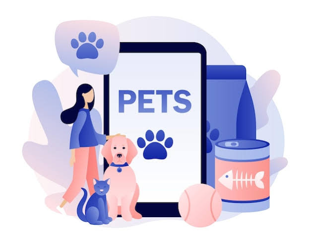
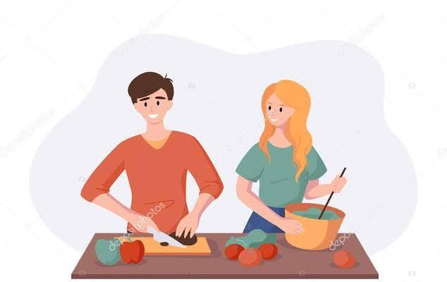

Pets
Tenho uma grande afinidade com os animais e compartilho meu dia a dia com meus bichinhos O cuidado com eles me ensinou valores importantes como responsabilidade, dedicação e organização Brinco que minha casa é uma pequena fazenda, como costuma dizer minha mãe.
Viagem
Adoro viajar e explorar novos lugares. Gosto de conhecer diferentes culturas, experimentar a gastronomia local e descobrir um pouco da história de cada destino. Para mim, cada viagem é uma oportunidade de aprendizado e novas experiências.

Hobby
Nas horas livres, gosto de cozinhar e experimentar novas receitas. Também aprecio momentos de lazer assistindo filmes, séries e animações, atividades que estimulam minha criatividade e proporcionam momentos de descontração.
Faculdade/Tripleten
A área de tecnologia despertou meu interesse de forma natural e, desde então, venho buscando ampliar meus conhecimentos continuamente. Atualmente curso Engenharia da Computação e participo da formação da TripleTen, onde espero desenvolver novas habilidades e aprofundar minha experiência no universo da tecnologia.